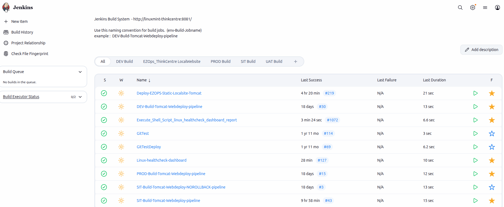
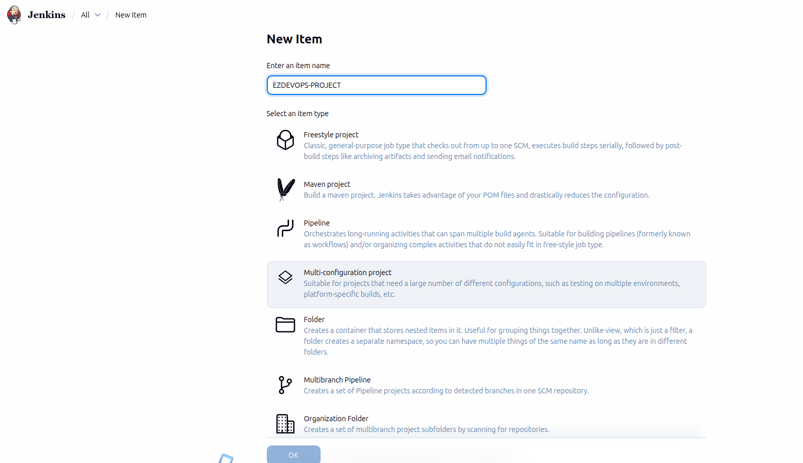
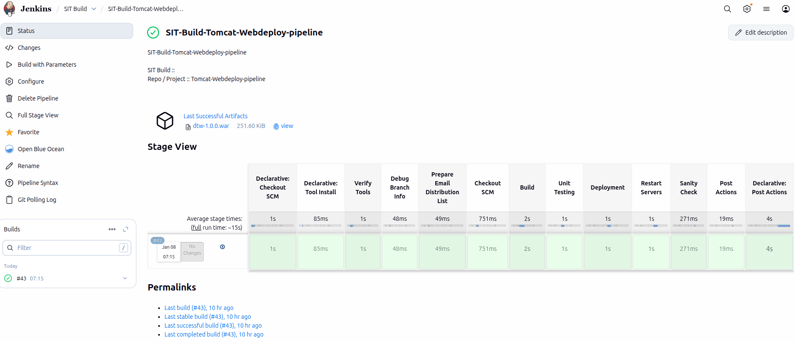
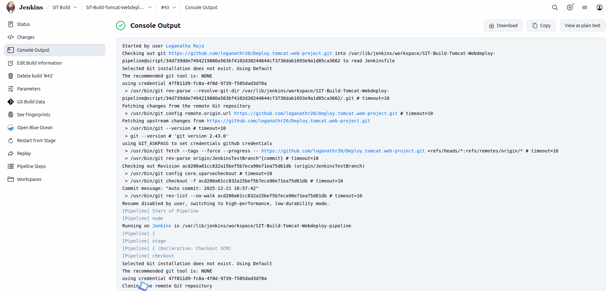

Jenkins Pipeline Syntax
You can write a Jenkinsfile using either Scripted or Declarative pipeline syntax.
Declarative pipelines are newer, easier to read, and provide richer syntax compared to scripted pipelines.
Regardless of the syntax, a Jenkinsfile is composed of multiple steps that define what happens in each stage of the pipeline.
:::
Declarative Pipelines
With this syntax, the pipeline block specifies
all the tasks performed throughout the entire pipeline.
:::
pipeline {
agent any
tools {
maven 'mvn'
jdk 'JDK'
}
environment {
BUILD_TOOL_CMD = 'mvn'
}
stages {
stage('Verify Tools') {
steps {
sh 'java --version'
sh 'mvn --version'
}
}
stage('Checkout SCM') {
steps {
checkout scm
}
}
stage('Build') {
steps {
sh "mvn clean install -DskipTests"
archiveArtifacts 'target/*.war'
}
}
stage('Deployment') {
steps {
echo 'Deploying application...'
}
}
}
post {
success {
echo 'Build Successful'
}
failure {
echo 'Build Failed'
}
}
}
:::
This example shows a Declarative Pipeline that performs:
- Tool verification
- Source code checkout
- Build using Maven
- Application deployment
- Post-build success/failure actions
Scripted Pipeline
Scripted pipelines use a more flexible Groovy-based syntax and provide full control over the pipeline flow.
Unlike Declarative pipelines, Scripted pipelines do not enforce a fixed structure. You write the pipeline logic using standard Groovy code.
:::
Scripted Pipeline Syntax
This style gives you full control using Groovy code.
:::
node {
stage('Verify Tools') {
sh 'java --version'
sh 'mvn --version'
}
stage('Checkout SCM') {
checkout scm
}
stage('Build') {
sh 'mvn clean install -DskipTests'
archiveArtifacts 'target/*.war'
}
stage('Unit Testing') {
sh 'mvn test'
}
stage('Deployment') {
echo 'Deploying application...'
}
stage('Post Actions') {
echo 'Pipeline completed'
}
}
:::
This Scripted Pipeline performs the following actions:
- Verifies Java and Maven tools
- Checks out source code from SCM
- Builds the application
- Runs unit tests
- Deploys the application
- Executes post-build steps
Using Jenkins Pipeline
Jenkins Pipeline is a powerful set of plugins that helps you design, manage, and automate Continuous Delivery (CD) workflows. It allows you to define your entire build, test, and deployment process as code using the Pipeline DSL.
With Jenkins Pipeline, you can model both simple and complex delivery processes in a reliable, repeatable, and version-controlled way.
Getting Started with a Jenkins Pipeline
There are multiple ways to create a Jenkinsfile. One of the easiest methods is using the Jenkins web interface, where the file is stored directly on the Jenkins server.
Creating a Pipeline Using the Jenkins UI
- Log in to Jenkins and open the Dashboard.
- Click New Item from the left-hand menu.
- Enter a project name in the Item Name field. Avoid using spaces, as Jenkins creates directories based on this name.
- Select Pipeline as the project type and click OK.
- Open the Pipeline tab in the configuration page.
- Set the Definition option to Pipeline script.
- Paste your Jenkinsfile code into the Script box.


Example Jenkinsfile (Declarative)
// Jenkinsfile (Declarative Pipeline)
pipeline {
agent any
stages {
stage('Stage 2') {
steps {
echo 'Hello World!'
}
}
}
}
- Click Save to store the pipeline configuration.
- From the project page, click Build Now to run the pipeline.
Once the build starts, Jenkins will execute each stage defined in your Jenkinsfile and display the results in the build console.
Under the Build History tab on the left, select #1 to view the details for your specific pipeline run. Click on Console Output to view the run’s full output. A successful pipeline run should generate an output like this:
STAGE VIEW

CONSOLE LOG VIEW
